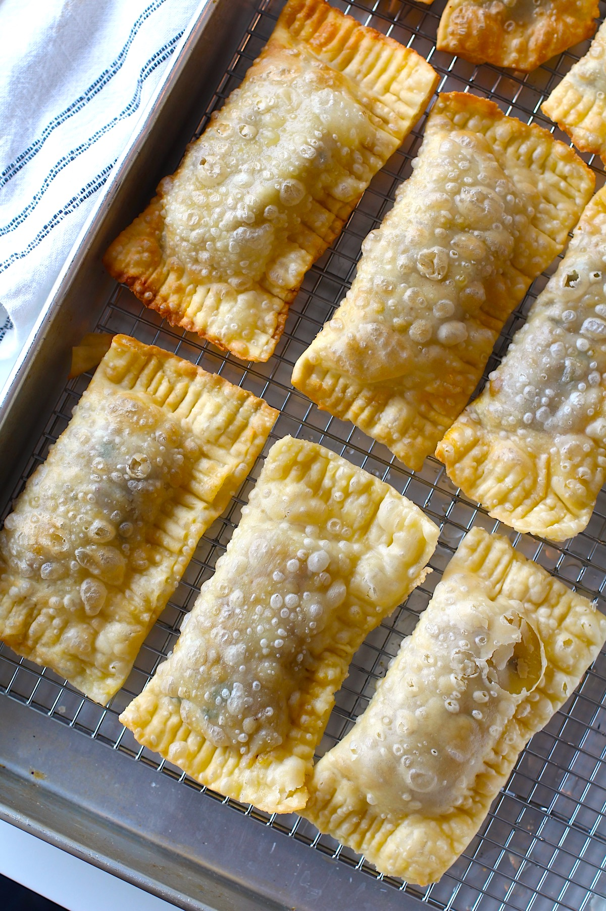

Home
Pastel

Description
A pastel , also known in Portuguese as pastel paulista (plural: pastéis paulistas)
or pastel de feira (plural: pastéis de feira), is a typical Brazilian fast-food dish,
originating in the state of São Paulo, consisting of half-circle or rectangle-shaped
thin crust turnover with assorted fillings, fried in vegetable oil. The result is a crispy,
brownish fried pie. The most common fillings are ground meat, mozzarella, Catupiry,
heart of palm, codfish, cream cheese, chicken and small shrimp. Pastéis with sweet fillings
such as guava paste with Minas cheese, banana and chocolate also exist. It is traditionally
sold on the streets, in open-air marketplaces, or in fast-food shops known as pastelarias.
Ingredients
- All Purpose Flour
- Egg, yolk only
- Butter
- Water
- Salt
- Ground Beef
- Olive Oil
- Garlic cloves
- Scallions (green onions)
- Chili Powder
- Ground Cumin
- Black Pepper
- Oil for Frying
Steps
- Add the salt to the water and set aside.
- Sift the flour into a large bowl or flat surface. Make a well in the center and add the egg yolk and softened butter.
- Using a fork, combine the flour with the egg yolk and butter.
- Add the salted water and continue to mix until it starts to pull away from the sides and stick together. Then switch from fork to hands and knead (in the bowl or lightly floured work surface) until the pastry is elastic, about 4-5 minutes.
- Let the dough rest for 1 hour, covered with a cloth or plastic wrap. If longer than an hour, wrap in plastic wrap and store in the refrigerator for up to 2 days.
- Mince the garlic. Thinly slice the scallions.
- Preheat a medium-large pan on high heat. Turn the heat to medium heat and add 1 teaspoon Olive Oil, then the ground beef. Break up the beef and add the minced cloves garlic, sliced scallions, chili powder, cumin, salt, black pepper. Transfer the filling to a bowl and let it cool in the fridge.
- Roll the dough out using a pasta machine or roller attachment (see recipe notes for rolling by hand). Cut the dough into 4 equal parts and let it rest at room temperature for 20-40 minutes to make it easier to roll.
- Start with one section of the dough and flatten it with your hands to about ¼ to ½ inch thick. Flour both sides of the dough before inserting it into the pasta roller. Start with the thickest setting, slowly working your way to the thinnest setting.
- Cut into large squares that are between 5-6 inches x 5-6 inches. I can usually get 4-5 squares per sheet (4 sheets = total of 16-20 pasteis). You can also cut large circles and then fold into a half circle, but the rectangle is a popular shape in Brazil and I love how easy it is! TIP: I do this cutting by folding over the dough into the final rectangle shape. This helps me make sure that the shape is even and makes space on the surface to cut all of the sheet. I can then also easily see where to trip the ends of the dough.
- Add a heaping tablespoon or so of the cooled beef filling to the pastel dough, just to the left of the center of each square so that you can fold over the right side, making pastel rectangles.
- Using your fingers, moisten the edges of left edges of dough with water. Carefully fold over the right side keeping the filling inside away from the edge so that you get dough on dough to seal. Push down to seal with fingers.
- Then use fork tines to press and seal the edge of the dough all around the outside. Place on a sheet pan or floured surface until ready to fry. Now, either fry them (see below) or place the sheet pan in the freezer and then transfer the pasteis to a storage container after frozen.
- Heat a large, deep pot of vegetable oil to 360 F to 375 F degrees.
- You can test the oil with a small piece of dough or by inserting a wooden spoon handle and see if it bubbles. If it does, the oil should be ready.
- Add 1-2 pastels at a time, lowering each carefully into the hot oil and frying for about 15 to 20 seconds until golden brown. Then place the Pastel on paper towel to absorb the excess oil.
Other Recipes: